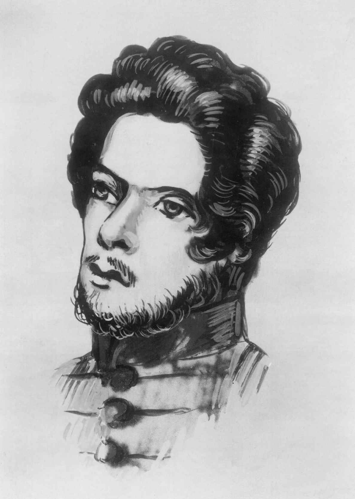
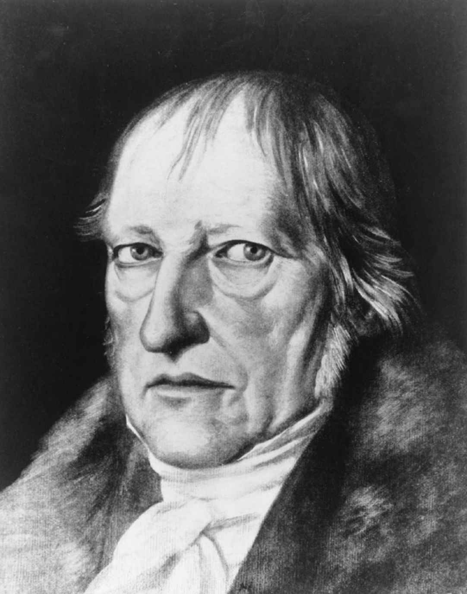

正如我在本书前言中所说，我不打算去阐释黑格尔的《逻辑学》。但另一方面，我又不愿留给读者一种错误的印象，就好像《逻辑学》在黑格尔整个哲学体系中并不重要或只是外围工作。因此，我也要谈谈黑格尔写作《逻辑学》的目的。借此机会，我将解释一下往往被视为黑格尔在逻辑方面最伟大发现的辩证法。
黑格尔在《逻辑学》导言中告诉我们，逻辑的目标是真理。这一切都没什么问题，但那是一种什么样的真理呢？黑格尔从对这一学科的传统看法开始谈起，传统看法从一开始就把形式与内容分开，认为逻辑研究的是正确思考或有效思考的形式，而不管其内容是什么。通常所理解的逻辑研究的是下面这样的论证形式：
这里我们有了一种没有内容的形式。分别对应于A、B和x，我们可以写“人”“会死的”和“苏格拉底”，或者“四条腿的动物”“有毛皮的”和“我的宠物乌龟”。在这两种情况下，该论证都是有效的，尽管如果前提错误，结论也可能错误。有效性关乎形式，而非内容。逻辑学家对内容不感兴趣。
这种形式与内容的分离使得逻辑无法告诉我们有关现实世界的任何东西。即使人不会死，或者乌龟有毛皮，逻辑所描述的论证形式也是一样。即使根本就没有人和乌龟，这些形式也不会改变。
如果我们还记得黑格尔在《精神现象学》中是如何通过质疑认知者与被认识对象之间的通常区分而开始研究认识问题的，那么当我们得知，黑格尔提到这种形式与内容的传统区分只是为了否定它，就不会感到奇怪了。黑格尔说，逻辑是对思想的研究。但是在《精神现象学》中他已经表明，没有独立于思想的客观实在。思想就是客观实在，客观实在就是思想。因此当逻辑研究思想时，它必定也在研究实在。黑格尔明确指出：“如果我们还想使用质料 （matter）一词”，逻辑的内容就是“真正的名符其实的质料”。他进而为我们提供了逻辑主题的一些意象。他说，逻辑就是真理本身，“真理本身是毫无蔽障、自在自为的”，或者换句话说，“这个内容就是上帝的启示，展示永恒本质中的上帝在创造自然和一个有限的精神以前是怎样的”。
沃尔特·考夫曼称这句话“也许是黑格尔所有著作中最疯狂的意象”，然而它所暗示的思想却并非与逻辑说不出关于世界的任何东西这一传统看法完全无关。黑格尔说，逻辑不涉及自然界和有限精神的世界，这是部分接受了传统看法。而他最急于摈弃的是这样一种观念，即实在或真理只有在自然界和人类世界中才能找到。恰恰相反，根据黑格尔的绝对唯心主义，终极实在只有到精神或理智而不是物质中才能找到。确切地说，只有在理性思想中才能找到。因此，逻辑研究的是纯粹的终极实在，这种实在已经从它在有限的人类精神或自然界中表现出来的特殊形式中抽象出来。
黑格尔关于精神就是终极实在的看法对逻辑的重要性有进一步的影响。既然精神塑造世界，那么研究理性思想将会揭示塑造世界所依据的原则。用黑格尔自己的意象来说就是：理解上帝创世之前的永恒本质就是理解创世的依据。
马克思在写作《资本论》时曾写信给恩格斯说：
我碰巧又把黑格尔的《逻辑学》浏览了一遍，这在处理事实的方法 上帮了我很大的忙。……如果以后再有工夫做这类工作的话，我很愿意用两三个印张把黑格尔所发现，但同时又加以神秘化的方法中所存在的合理的 东西阐述一番，使一般人都能够理解……
马克思这里提到的方法当然是辩证法，黑格尔称之为学术阐释和科学阐释的“唯一正确的方法”。他在《逻辑学》中正是用辩证法来揭示纯粹思维形式的。
马克思从未找到时间来写他对辩证法合理内容的解释。不过其他许多人写了，而且远比马克思打算写的要长。在这些评注家当中，有些人吹嘘辩证法可以替代所有之前的逻辑形式，可以取代像本章开头给出的简单三段论那样的普通推理。但在黑格尔那里，没有任何东西可以证明这些对辩证法的过分夸奖是正当的，也没有任何必要像另一些人那样，把辩证法当作某种神秘深奥的东西。黑格尔说，这是一种有着“单纯节奏”的方法，掌握它并不需要什么高超技巧。
事实上，我们在阐释《精神现象学》时一直在走辩证法的两个步骤，因为正如黑格尔所说，这部著作是“这种方法应用于一个更加具体的对象即意识的一个范例”。只有黑格尔会把《精神现象学》中描述的意识看成一种相对具体的对象。不过黑格尔后来的著作中包含有辩证法的更加具体的例子。为了阐释的方便，让我们从《历史哲学》中的一个例子谈起。
在《历史哲学》中，一场宏大的辩证运动主导了从希腊到现在的世界历史。希腊是一个基于惯常道德的社会，一个公民把自己等同于共同体并且想不到反对它的和谐社会。这个合乎习惯的共同体构成了辩证运动的起点，用专门术语来说就是正题 。
下一个阶段是，这个正题表现出了自己的不完善或不一致。就古希腊共同体而言，这种不完善是通过审问苏格拉底暴露出来的。希腊人是不能没有独立思想的，但独立的思想者却是惯常道德的死敌。于是在独立思考的原则面前，这个基于习惯的共同体崩溃了。现在轮到这条原则发展了，这是在基督教的影响下进行的。宗教改革使人们接受了个人良知的最高权利。希腊共同体的和谐已经失去，但自由取得了胜利。这就是辩证运动的第二阶段。它是第一阶段的对立面或否定，因此被称为反题 。
然后，第二个阶段也表明自己是不完善的。事实证明，它所理解的自由过于抽象和贫瘠，无法充当社会的基础。付诸实践后，绝对自由原则成了法国大革命的恐怖。于是我们可以看到，无论是惯常的和谐还是个体的抽象自由都是片面的。必须把它们结合和统一起来，既保留它们，又避免其不同形式的片面性。这便引出了第三个阶段也是更完善的阶段，即合题。在《历史哲学》中，整个辩证运动的合题就是黑格尔时代的德意志社会。他认为这个社会是和谐的，因为它是一个有机共同体，而它又保留了个体的自由，因为它是合理组织起来的。

图17 学生时代的卡尔·马克思（1818-1883）
任何辩证运动都终止于合题，但并不是任何合题都会把辩证过程带到终点，就像黑格尔认为他那个时代的有机共同体已经把历史的辩证运动带到终点那样。虽然合题恰当地调和了先前的正题和反题，但事实往往证明，合题在其他某个方面是片面的。于是它将充当一个新的辩证运动的正题而使过程继续下去。在《精神现象学》中，我们看到这种过程发生了不止一次。例如，讨论意识的那一节以自我意识的出现而结束。我们把自我意识作为正题，看到它还需要某个对象以从中分化出自己，这个外部对象可被视为反题。这并不能令人满意，因为外部对象是某种与自我意识异质或敌对的东西。它们的合题就是欲望，自我意识在欲望中保留了外部对象，但使之成为自身的东西。之后欲望的状态又被证明不能令人满意，于是我们走向了本身就是一个自我意识的外部对象。也许可以把这第二个自我意识看成第一个自我意识的反题，两者的合题则是主人统治奴隶从而获得承认的一种局面。这一新的合题并不比之前的合题更长久，因为奴隶最终要比主人具有更多的独立性和自我意识。这一反题在同时关于主人和奴隶的斯多亚主义哲学那里又找到了它的合题，如此等等。
在《逻辑学》中，同一方法被用于我们用以思维的那些抽象范畴。黑格尔首先讨论了最无规定性、最无内容的概念：有，或空洞的存在。他说，纯有就是纯粹的无规定性和空。纯有之中没有任何可以为思维所把握的对象。它完全是空。事实上，它就是无。
《逻辑学》的辩证法就是从这个激动人心的开端向前发展的。第一个正题有 ，变成了它的反题无 。有和无既对立又同一，因此它们的真理就是这种彼此间的融合和分离，换句话说就是生成 。
就这样，辩证法继续向前发展，但我们不再进行追溯。我们已经足以把握辩证法的思想了。对黑格尔而言，辩证法是一种阐释方法，但他说，这种方法“与它的对象和内容绝没有什么区别——因为推动它前进的正是内容本身，即它本身所拥有的辩证法 ”。在我们的思维范畴中，在意识的发展中，在历史的进步中，有许多对立因素导致了看似稳定的东西瓦解，由此产生的新东西调和了之前的对立因素，但也发展出了它自身的内在张力。这个过程是必然的，因为无论是思想还是意识都不可能以完满的形式产生出来。只有通过辩证发展的过程，它们才能达到完满。根据黑格尔的说法，辩证法之所以能够充当一种阐释方法，是因为世界就是辩证运作的。
黑格尔《逻辑学》中最重要的目标很明确，那就是证明绝对唯心主义的必然性。正如我们所看到的，他试图从空洞的概念——有——出发，表明这个概念由辩证的必然性导向了能够更为准确和真实地把握实在本质的其他一些概念。而这些概念同样被证明是不完善的，并需要其他概念，直到我们最终达到“绝对理念”为止。关于绝对理念，黑格尔说：“一切其他东西都是错误、朦胧、意见、趋向、任意和可消逝性；唯有绝对理念是有，是不消逝的生命，是自知的真理并且是全部真理。”因此，《逻辑学》与《精神现象学》很相似，只不过它是概念领域而不是意识领域中的运动。所以它的目标不是绝对知识，而是绝对理念本身。至于它是否成功地证明了绝对唯心主义的必然性，我这里不去考虑。不过要想找到一位当今在世的哲学家相信黑格尔成功做到了这一点，恐怕要颇费一番气力。
那么，什么是“绝对理念”呢？这个问题并不容易回答。最好的回答也许是：一切事物。但这听起来还不是很明白，所以我将试着说得更明确些。
黑格尔说，绝对理念“包含着每一个规定性”。他的意思是，绝对理念在自身之中包含着每一个确定的或独特的事物——每一个人、每一棵树、每一颗星、每一座山、每一粒沙。他说，自然和心灵是显示绝对理念存在的不同方式，是绝对理念的不同形态。艺术和宗教则是领悟绝对理念的不同方式，或者用黑格尔的话说，艺术和宗教是绝对理念领悟它自身 的不同方式。（这是一种将自己包括在内的自我领悟，因为人是绝对理念的一部分。）哲学也是领悟绝对理念的一种方式，但其形态要比艺术或宗教更高，因为它从概念上来把握绝对理念，因此不仅懂得其自身的领悟形式，而且也懂得审美和宗教的领悟形式。
以独特而有限的形态显示自身，然后返回自身，这属于绝对理念的本质。绝对理念以自我领悟的形式返回自身。这就是我们在《历史哲学》《精神现象学》以及现在在《逻辑学》中看到的过程。在《法哲学原理》所描述的那种理想国家中，自我领悟成了一种客观的社会形式。在《美学讲演录》和《宗教哲学讲演录》中，黑格尔把各种形式的艺术和宗教当作领悟绝对理念的样式来评价其完善性。不论是表面上还是潜藏在深处，绝对理念的自我领悟都是黑格尔整个哲学的核心主题。
我曾说过，在黑格尔看来，绝对理念就是一切事物。我也说过，它试图领悟自身。于是我们又回到了对《精神现象学》的讨论结束时留下的一个悬而未决的问题：黑格尔真的相信包含一切事物在内的整个宇宙构成了某种有意识的东西吗？绝对理念是上帝吗？
显然，虽然黑格尔是路德宗信徒，但他并非正统的基督教有神论者。《精神现象学》关于“苦恼意识”那一节的要旨也时常出现于其他一些著作。把上帝看成某种与世界分离的东西，这是使人的灵魂疏离。如果上帝存在，他就在世界中，人则分有他的本性。
那么，黑格尔是否是一个断言上帝完全与世界同一的泛神论者呢？这种解释固然可能与他的某些说法一致，但在《宗教哲学讲演录》中，他明确反对泛神论，甚至否认有人说过“万物是上帝”。当然，黑格尔并不认为特殊的事物和有限的人类就是上帝。
黑格尔有没有可能是一个无神论者呢？我们已经看到，他把哲学视为一种高于宗教的领悟绝对理念的方式。意大利哲学家贝内代托·克罗齐曾说，黑格尔的哲学是“完全不虔敬的，因为它并不满足于与宗教相对抗，或者让宗教与自己相并列，而是让宗教变成自己，并以自身去代替宗教”。克罗齐正确地指出了为什么拒绝赋予宗教以最重要位置的黑格尔哲学在深层是不虔敬的。但可以看出，黑格尔还有其他许多思想是有宗教气质的，比如他在描述《逻辑学》本质时所使用的那些意象和隐喻；还有他的历史哲学，旨在说明历史如何在精神的指引下朝着它的目标前进；还有他对终极实在的看法，认为终极实在能够领悟自身，这暗示终极实在是人格化的。因此，把黑格尔说成无神论者违反了他的一些最核心的思想。

图18 黑格尔（1770-1831）
不是正统的有神论者，不是泛神论者，也不是无神论者——那会是什么呢？若干年前，研究黑格尔的学者罗伯特·惠特莫尔指出，黑格尔是一个超泛神论者（panentheist）。这个词来自希腊文，意思是“万物都在神之中”。它描述了这样一种观点，即宇宙万物都是神的一部分，但与泛神论（pantheism）不同，在超泛神论那里，神比宇宙更重要，因为神是整体，而整体要比它的所有部分之和更伟大。这就像一个人不只是组成他身体的所有细胞一样——尽管这个人离开了身体就什么也不是。所以根据这种观点，神要比宇宙的所有组成部分之和更多，但又不与它们相分离。同样，正如单独的细胞加起来并不等于一个人，宇宙的个别部分加起来也不等于神。
惠特莫尔的解释似乎是有道理的，不仅是因为它与黑格尔关于上帝的具体说法相一致，而且因为它理解了黑格尔哲学最重要的主题。如果上帝是绝对理念，是宇宙的终极实在，是其各个部分的整体，我们就可以理解为什么绝对理念必定会在世界中显示自身，并且在那里发展到自我领悟。上帝需要宇宙就像人需要身体一样。
上帝缺少了某种东西，大多数宗教信徒都会很反感这种想法。在他们看来，黑格尔也许说的正是这样的事情，遂把他的哲学解释为不虔敬的。但我认为这是错误的。因为黑格尔并没有把上帝看成永恒不变的，而是看成了一种需要在世界中显示自己的本质，在显示之后还要为了完善自己而去完善世界。这种想法虽然奇特，但却很有力量。它极为强调发展的必然性，因为历史的前进是上帝为了实现完满而必须走的道路。黑格尔虽然外表保守，却对激进的革命思想家产生了巨大影响，其奥秘也许就在这里。